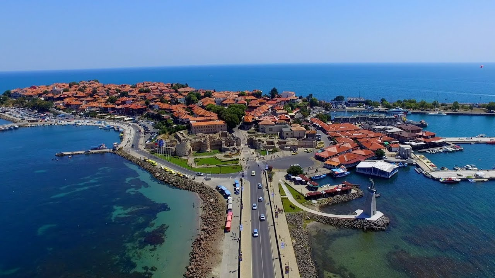
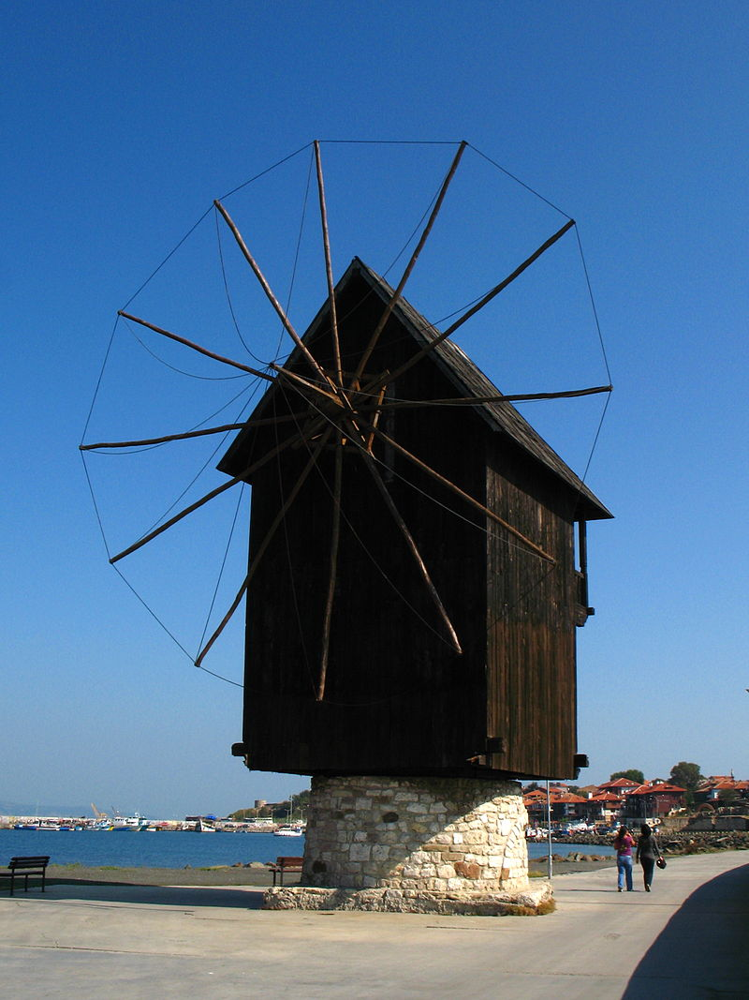
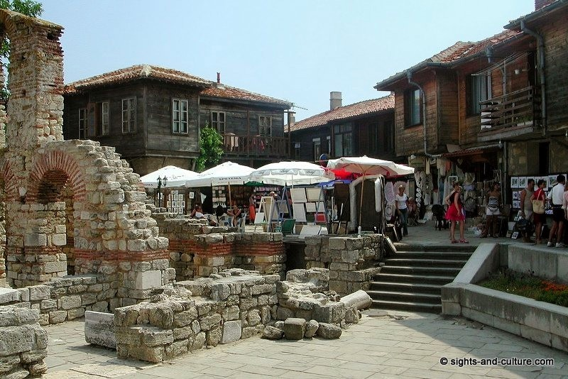
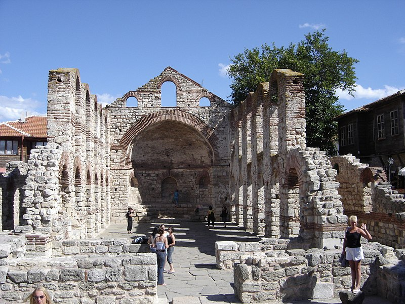
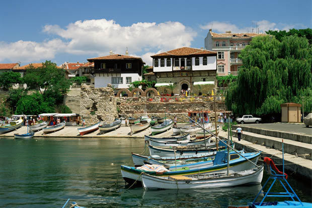
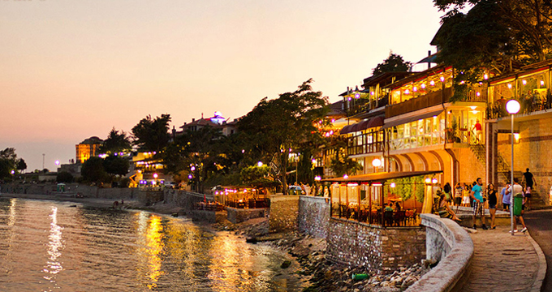

Nessebar
 Nessebar is an ancient city and one of the major seaside resorts on the Bulgarian Black Sea Coast. The small city exists in two parts separated by a narrow man-made isthmus with the ancient part of the settlement on the peninsula, and the more modern section on the mainland side.
Old town
 Whether built during the Byzantine, Bulgarian or Ottoman rule of the city, the churches of Nesebar represent the rich architectural heritage of the Eastern Orthodox world and illustrate the gradual development from Early Christian basilicas to medieval cross-domed churches.
Port town
 It was one of the most important strongholds of the Eastern Roman Empire from the 5th century AD onwards, and was fought over by Byzantines and Bulgars, being captured and incorporated in the lands of the First Bulgarian Empire in 812 by Khan Krum after a two-week siege only to be ceded back to Byzantium by Knyaz Boris I in 864